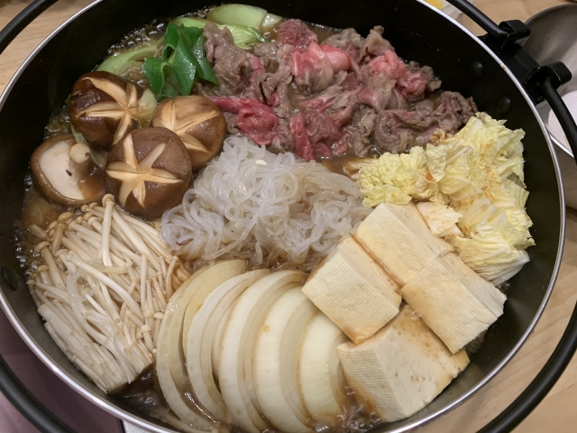

Sukiyaki (すき焼き)

Sukiyaki is a Japanese dish of thinly sliced beef, tofu, and vegetables cooked in soy sauce, sugar, and mirin. It is a one-pot meal that is typically cooked at the table.
Ingredients
- 1 pound thinly sliced beef
- 1 block tofu, cut into bite sized pieces
- 1 bunch green onions, cut into 2-inch pieces
- 1/2 napa cabbage, cut into bite sized pieces
- 1/2 cup soy sauce
- 1/2 cup mirin
- 1/4 cup sugar
- 1/4 cup sake
- 1/4 cup dashi soup
- 1/4 cup water
- 1/4 cup vegetable oil
Directions
- Heat oil in a large skillet over medium heat.
- Add beef and cook until browned, about 5 minutes.
- Add tofu, green onions, and napa cabbage to skillet.
- In a separate bowl, mix soy sauce, mirin, sugar, sake, dashi soup, and water.
- Pour sauce over beef and vegetables in skillet.
- Cover and simmer until vegetables are tender, about 10 minutes.
- Serve hot.
Back to Top
Back to Recipes Home